Leavenworth Climbing
Castle Rock and Icicle Ridge
May 24-26, 2003
Theron’s account of the trip is here.
Our plans to climb Mt. Rainier began to seem foolish as the weather got wet and warm for the coming weekend. So Theron, Aidan and I drove to Leavenworth (been going there a lot lately!). We spent Saturday climbing at Castle Rock. First I led the South Face of Jello Tower (5.8). It was a really fun pitch, with two overhangs to negotiate. The first one is harder, and a little tense due to the guidebook’s note: “This route requires immediate commitment. Groundfalls have occurred, and are to be avoided.” Tee hee! The second overhang is easier but more dramatic, due to the height, and because there is a great hand jam to hang from and look around below you. Then Aidan led Midway Direct (5.6) to the summit in a long pitch.
We came down, and Aidan started feeling heroic, so Theron belayed him on Damnation (5.9), which is the crack/chimney between Jello Tower and the main face. After a few enticing hand jams, the climb becomes abruptly HARD. VERY HARD. Aidan protected it well, but the strenuous and unfamiliar moves required him to hang often. The next 30 feet were really tough, even overhanging at a bulge. Finally, our hero reached a mid-point ledge for a much needed rest. Clearly, this climb would skool us all. The next section was long and kind of runout, but easier than the first part. It featured stemming and chimney techniques, with thin nuts for protection. The final easy hand crack to the end was a godsend after that tour-de-force!
Now it was my turn, as Theron decided to wait a year or so for this one! Aidan had some incredible rope drag, so he couldn’t keep the rope very tight. I didn’t mind at first, but when I got to the difficult “off-hands” part of the climb, I knew the stretch would allow me to hit the ground. Rather than get into more danger, I decided to jump in order to remove slack from the system. I let go from 12 feet up and landed on my feet lightly. Later I told Aidan about that, and he was totally unaware due to the rope drag. Now he was able to feel the tension better, and bring in the ropes as I climbed. I ended up laybacking the worst of the off-hands section. By the time I reached the mid-height ledge, I was pretty beat (and only following!). From there, I inched my way up the chimney by rolling my shoulders and pasting my feet on the opposite wall. Aidan had made some neat gear placements with opposing nuts. I had to leave a nut though, as it had been weighted a lot and all the bashing away with my nut tool was fruitless. No matter, this was a climb worth paying for, as the difficulties set a new standard to rise to. We hooked up with some other guys I had met before for the rappel. We were exhausted and dehydrated. It is a great test piece for 5.9!!
Now we climbed Saber. I led the first pitch and Theron led the second two. Probably Theron should have led everything. Some of these climbs were beyond him at this point, so he had to stand around more than anyone should have to. I resolved that we should hike the next day so we’d all get a full-day fun pass!
We ate at an Italian restaurant, then bivied in the canyon. After a good night’s sleep, we got up the next day excited to climb. Somehow, we got the idea to go down to Tieton and climb. Only Theron had been there before. But as we thought about it, it would be better to stay here and hike. I had tried to sign us up to climb Cashmere Mountain, but the 17 mile round trip appalled my companions! As it turned out, we’d hike about that same distance anyway!
Icicle Ridge seemed like a good compromise, so we started up. Aidan kept saying stuff like:
“I like resting. Resting is cool.”
and
“I don’t think Colin would have done this. Yeah, Colin would have protested.”
Sometimes Theron would say:
“Yeah, I like resting too.”
So I felt like a schoolmarm on some kind of natural science field trip!
But as we hiked on, and the views improved, my charge’s spirits improved. It really is a neat hike, actually. Ridge top wandering, lots of elevation gain (over 6000 feet in total), and a cool feeling because you are traversing a large and important structure in the L-town constellation. Two other climbers were hiking as well, and we talked about climbs for a while. But we were the only ones who decided to hike all the way to 4th of July Creek and down in a one-way trip. Aidan and I wore tennis shoes, but were undaunted by the miles of snow-walking.
“This was a great idea, Michael” said Aidan.
Ha ha! I won!!!
I was introduced to bagels and hummus. Man, is that good. I ate a lot of that. The views of the Stuart range were awesome. The Snow Creek Wall was far below us eventually. Cashmere Mountain and Cannon Mountain looked very respectable, something you don’t see from the road. We realized that what we thought was Cashmere Mountain was merely a ridge far below the true summit. There were high clouds, and the west side of the range was pretty socked in. We ate lunch on an overhanging rock that freaked Aidan out. I hopped up and down on it at my peril! We had lost the trail long ago, and just stuck to the ridge crest, and we found bear tracks at a creek crossing.
Finally we reached our end point, and scrambled up to the site of an old fire lookout. There was a metal rung to help us get up there. (Shades of via ferrata). Here I finished my own, and everyone else’s hummus and bagels. Some nice folks took a picture. Really neat! One man grabbed the iron rung, peeked over the lip of the boulder, and immediately turned around and went down.
We easily kept the trail down 4th of July creek. Not like last time, when I lost it in snow, and bushwhacked 4000 feet to the road! The trail was gentle in the upper half, and brutally steep below. We wondered if the original trail boss was fired, and a more moderately tempered fellow hired in his place. A talkative woman with a monosyllabic man were passed. We could still hear her voice on switchbacks far above!
My heel started to hurt as we reached the bottom. At the trailhead, I got a ride from some hikers back to the Icicle Ridge trailhead 8 miles away. We talked about many hikes we had in common.
Next stop, Heidelburger, where we were terrorized by an unstable woman who asked “how do I get out of this #$@! town anyway!” and screamed “F*#( You!!!” into a pay phone. She was having a terrible day, I guess. She apologized, then got in her car and started cursing again when her door wouldn’t shut properly. That was too much! I wanted to laugh, but frankly, I was afraid.
Aidan drove home to work on an English paper, while Theron and I went to Barney’s Rubble. There is a neat un-named 5.6 crack climb that I though Theron would like to lead. He did very well, but there is a committing crux move that was too puzzling. I had forgotten exactly what to do, so my “beta from the ground” was worse than useless. I went up and made that last move, then we did two or three laps on the climb. I top-roped a 5.8 crack to the left that used to seem really hard. Now it’s just hard!
After another good night’s sleep we rose early and quickly hiked in to the Snow Creek Wall. I was going to introduce Theron to Orbit (5.8), a great 7 pitch climb on the wall. We got to the base and roped up. Theron let out a horrible cry. He didn’t have his rock shoes! A pitiful wailing echoed around the basin for a while, as he tore his clothing and pulled out hair. I wasn’t too disappointed, figuring that these things happen sometimes. We did see two mountain goats anyway. We hiked away, greeting numerous parties intent on climbing Orbit.
Back at the car, I ate some more bagels and hummus. Alex and Summer drove up and we heard about their climb of Hyperspace the day before. Definitely awesome! We drove back to Barney’s Rubble and found Theron’s shoes. Yay!
Now we hiked to Trundle Dome, where I wanted to lead April Mayhem (5.9). It was incredibly hot on the southeast facing granite wall. Already thinking it wasn’t such a great idea, I climbed up to a wet corner. There was enough green slime to make me feel good about grabbing a quickdraw to clip the next bolt. Sweating like a farm animal, I made dicey undercling moves to get past an overhang. I had to rest for an abnormally long time, as the last two days exertions caught up with me. Now I was at the hand crack of the “Piller de Cowboy Boot”. I climbed up, with finger and hand jams, and placed a piece. On to another one a little higher. Then I was in the crux, where the climb is dead vertical, and the crack leans far to the left. I was nervous enough that I figured I should protect one more time before reaching lower angled terrain. With a good hand jam, I fumbled for a cam, placed it. My body started to shake harder and harder. I knew I would fall very soon, if I could just finish my task! I was clipping a sling to the piece when I was off. I seemed to fall for a long time. I raggedly cried “FALLING!”
But Theron caught me, and I found myself hanging 20 feet below my high point. My black Metolius 4-cam caught the fall. I had been sweating so much on this wall, I now seemed to lose the ability. My skin felt hot and dry. For some reason, I wanted to continue. I regained my high point, then instantly lost motivation. Theron lowered me to the ground. I went to set up a rappel and retrieve my gear. This process seemed to take an hour, as I had become really dehydrated, but was also very shaky. After cleaning the gear I showed Theron my hand, which I tried to keep still. It shook like that of a 40-year drunkard! I felt that somehow the experience was good for me, but it wasn’t something I could enjoy at the time.
With that, Theron was into going home early, and I agreed. We took 97 down to I-90 because we could already tell the traffic would be terrible on highway-2. What we didn’t count on was the huge backup on I-90!! I turned off at Roslyn and got set with the idea of hiking until dark. But Theron wanted to keep going. We were both tired, sore and sunburnt, which didn’t help. I was stubborn because I figured that it was a holiday, and no matter how beat I am, I’m going to play in the mountains rather than sit on a freeway! I think Theron was more interested in a shower and some rest. I won the argument because I had the car, but naturally I felt like a complete cretin for saying so. Note to self: I’m pretty lame and fanatical about free time in the mountains. Psychotic even.
We went into a general store and bought some liquid. We both felt better because the owner told us there were multiple accidents, and it would be at least a 5 hour trip to Seattle. So, more at peace with circumstances, we drove off to hike up Jolly MOuntain. But the road was closed, so we changed to Thorp Mountain. We made it most of the way to the trailhead, until snow blocked the way. We hiked up the trail until we lost it on a snowy hillside. Having no special commitment to the trail, we set off up a steep slope to gain a ridge crest and thereby get a view. I was keen to find a good nap location. On the crest, Theron led us to craggier terrain, and then espied a route up a local high point. We scrambled over and around towers, pleased with the rugged terrain which felt completely unvisited. The north slope fell away in 300 foot high cliffs, and the south had perilous rubble strewn ledges.
After a while we didn’t want to reverse our route, having made enough devious traverses and difficult-to-reverse climbs, that it would take a long time to get back. We reached the summit of the ridge crest and saw two rocks stacked on each other. Perhaps left by an itinerant miner in 1927? I think it likely…
Theron had rallied to my cause, and we stood proud on our peak, trying to come up with names. “Little Big Peak” seemed best. After some pictures, and admiring Lemah Mountain in the distance, we carefully found our way down the opposite end of the ridge, which was shorter but steeper. Once I planned to use a tree limb as a handhold. Upon touching it, the entire tree plunged spectacularly down the cliff. It rolled down snow slopes, resembling a great claw, not unlike the hoary grasping limb from “Poltergeist, The Movie.”
A few more careful moves, and we made standing glissades down into the valley with the car. I, yet again, in tennis shoes, which were completely ruined after this (they were old anyway). Over Mexican food in Cle Elum, we toasted our folly and good fortune. We had snatched agony from the jawas of success, then ridden to victory on gift horses. Or something like that.
</td>
<td width=”30%” valign=top>
|
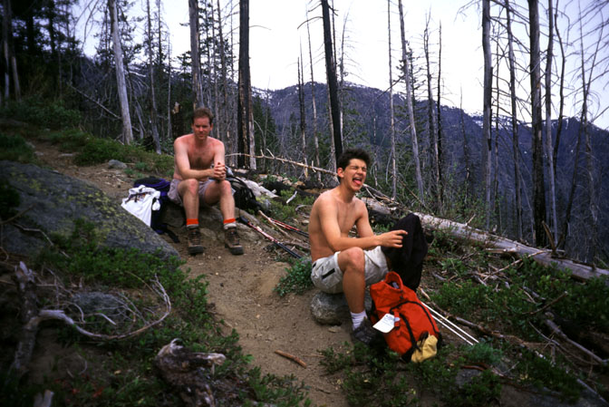 My whining friends. |
|
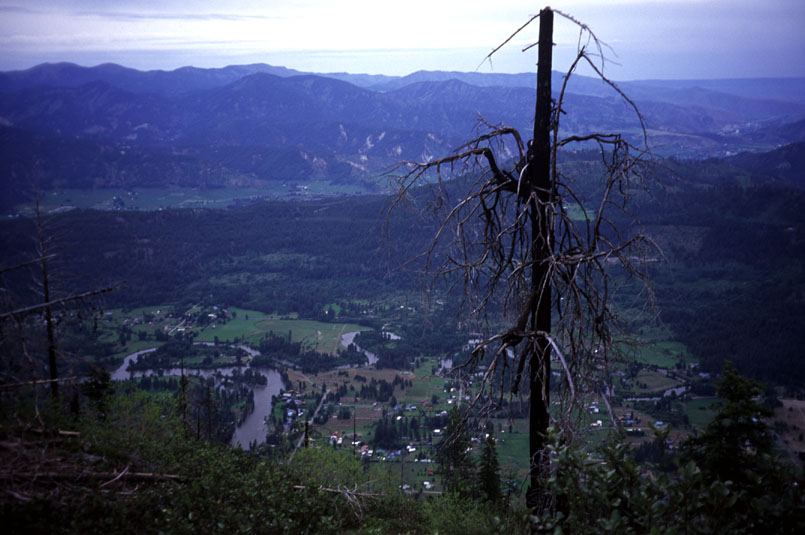 The suburbs of Leavenworth (Kansas). |
|
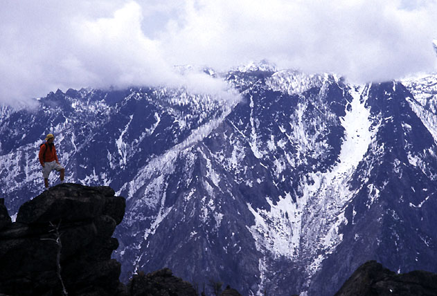 Aidan with the Enchantments behind. |
|
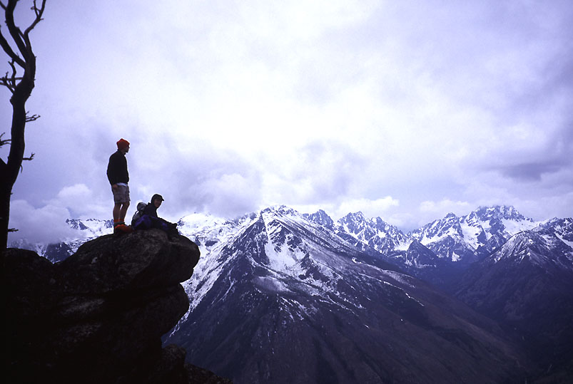 This is Lunch Rock |
|
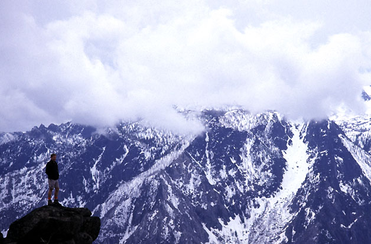 Theron on Hero Rock |
|
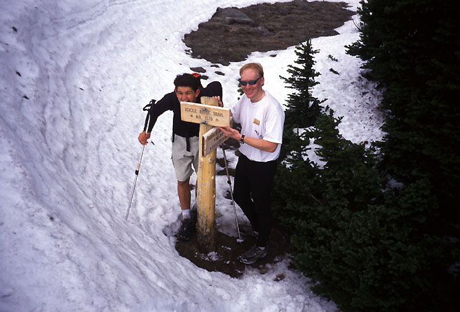 An important crossroad. |
|
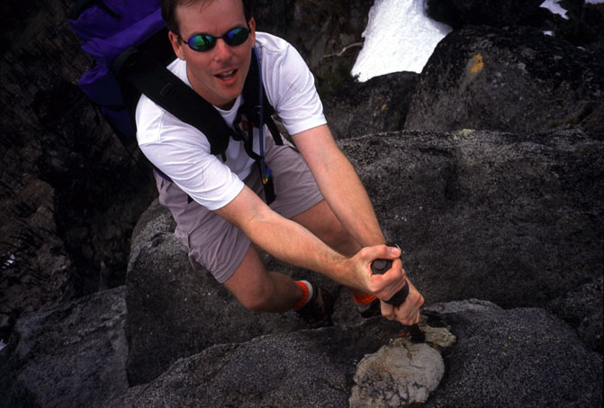 Theron on the via ferrata to the summit. |
|
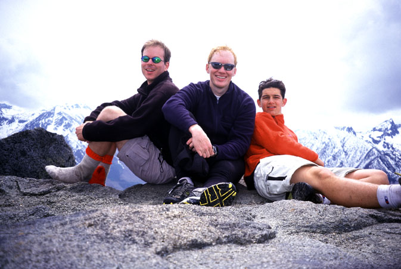 Solemn summiters |
|
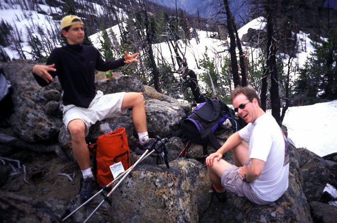 Yes they are always like that. |
|
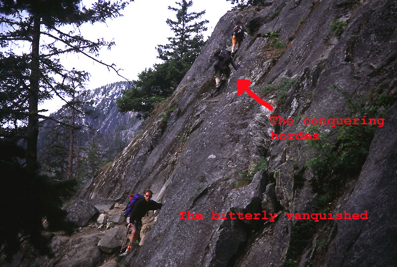 After the shoe incident |
|
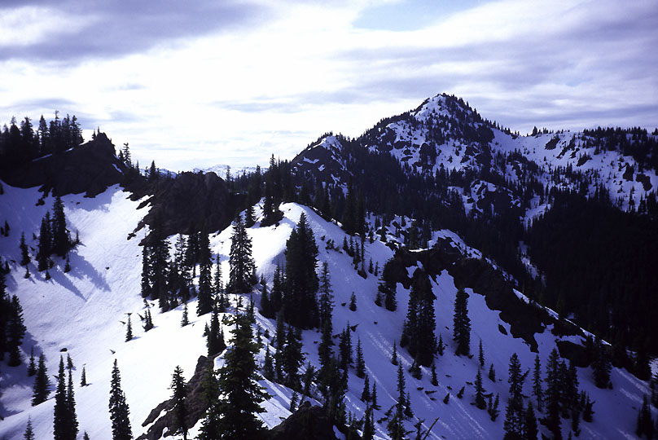 Thorp Mountain. |
|
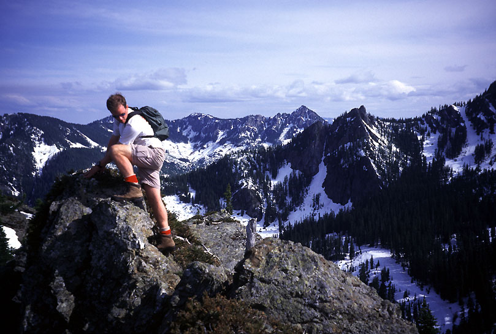 Theron on our scramble peak. |
{kind=link}
{kind=link}
{kind=link}
{kind=link}
{kind=link}
{kind=link}
{kind=link}
{kind=link}
{kind=link}
{kind=link}
{kind=link}
{kind=link}